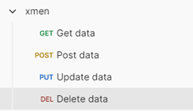

Testing the DELETE/id Request
-
Create a Postman workspace.
-
Create a REST API basics collection.
-
Enure the web services application is running.
-
In the xmen collection, select DEL Delete data.

The DELETE request type will be pre-selected. -
Enter the following in the {{base_url}}/info field. Include the
idof the X-men character to retrieve.http://localhost:8080/api/xmen -
Append the following parameters to the URL.
/{id}?api_key={}For more information, see xmen DELETE/id Parameters
-
Click Send.
If successful, a 200 response with an empty body will be displayed. Confirm deletion with a GET request.
For more information, see xmen DELETE/id Response